Week of February 27, 2012
Monday 2/27/12
9:28 PM
STATUS:
- Met w/ Matt for a while. Thoughts from our conversations
- The strong-overlapping with the scattered bits may reflect a kind of evolvable regulatory section hanging off the front or the back of the evolved genomes which is easier to interact with evolutionarily.
- This may be reflected in high functional modularity, low unity, but low scatter.
- Made some flame graphs to try to go with the cladeograms, and see if they tell me anything about the population structures.
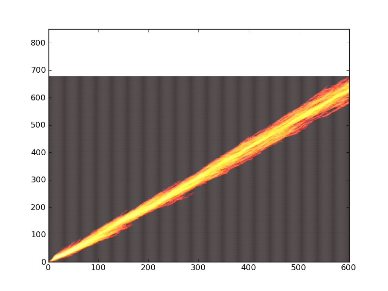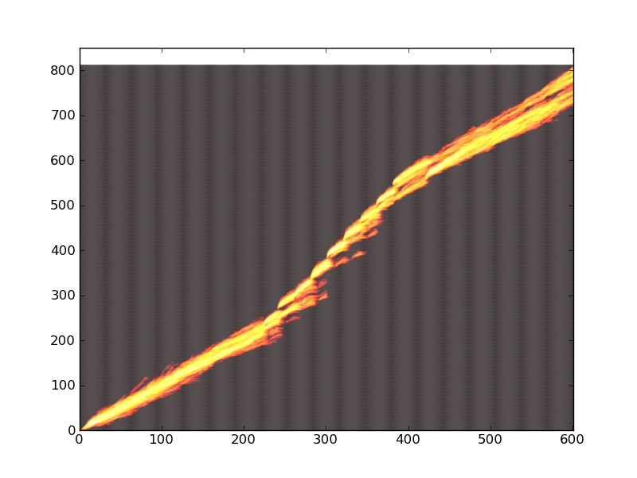
Figure 1 – Control and No Reward - Separated Ancestor
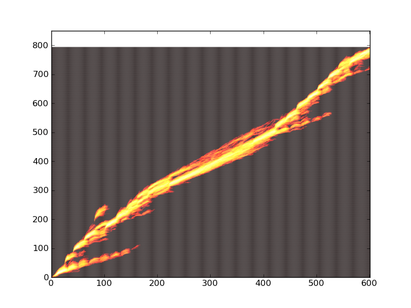
Figure 2 - Punish - Separated Ancestor
LOG:
- Graphing out the re-vamped physical modularity measures (unity and scatter) for run 065, which should have the correct stuff in it.
- Ok, it turns out I’m a dummy, and never tested whether my “calculate_physical_modularity.py” script actually worked after I modified it to do unity and scatter. Sigh. Fixed it, and running it again. Sadly this part takes FOR-E-VER.
- On the bright side, I modified the plot_from_csv.py script to handle up to five sources for up to four treatments, and it handles it semi-gracefully, by passing in a --data_sources parameter, which clues it in where the treatments start and end.
rosiec@malp:/Volumes/rosiec-1/research/Devolab Research/evolution_of_modularity/raw_data/065$ python ../../../scripts/generate_graphs_from_raw_data/plot_from_csv.py -o --data_sources 5 -t "Separated Task Ancestor" -x "Updates x50" -y "Modularity" physical_modularity_by_task__separated__two_task.png control_s*__functional_modularity.csv control_s*__backbone_task_unity.csv control_s*__backbone_task_scatter.csv control_s*__fluct_task_unity.csv control_s*__fluct_task_scatter.csv noreward_first_s*__functional_modularity.csv noreward_first_s*__backbone_task_unity.csv noreward_first_s*__backbone_task_scatter.csv noreward_first_s*__fluct_task_unity.csv noreward_first_s*__fluct_task_scatter.csv punish_first_s*__functional_modularity.csv punish_first_s*__backbone_task_unity.csv punish_first_s*__backbone_task_scatter.csv punish_first_s*__fluct_task_unity.csv punish_first_s*__fluct_task_scatter.csv
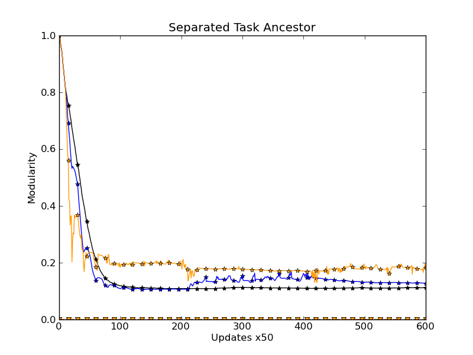
- It looks more or less like this, though there will be lines not in the bottom when I get the proper physical modularity stats. Sigh.
Tuesday 2/28/12
11:43 AM
STATUS:
- Still waiting for the re-running to finish. It’s 50% done with Stage 3, so, maybe a couple more hours. :(
LOG:
- Ok yay! It finished!
- A legend:
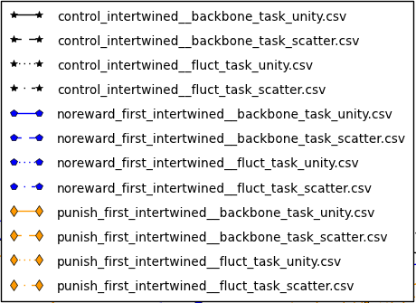
- Ugh. Ok, I think I’m going to focus on intertwined for the variation in unity and scatter, etc.
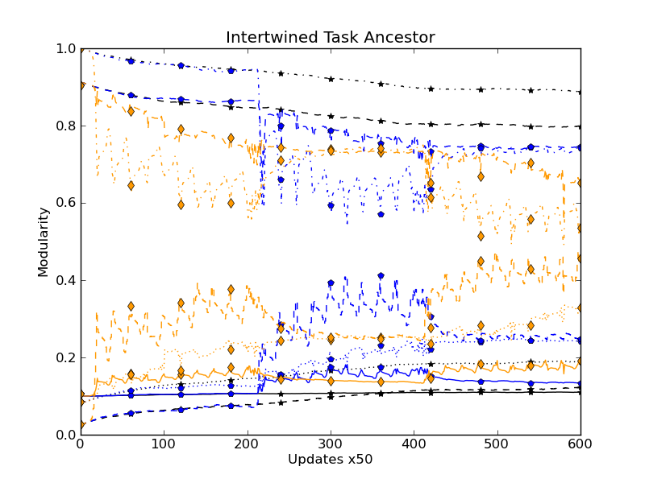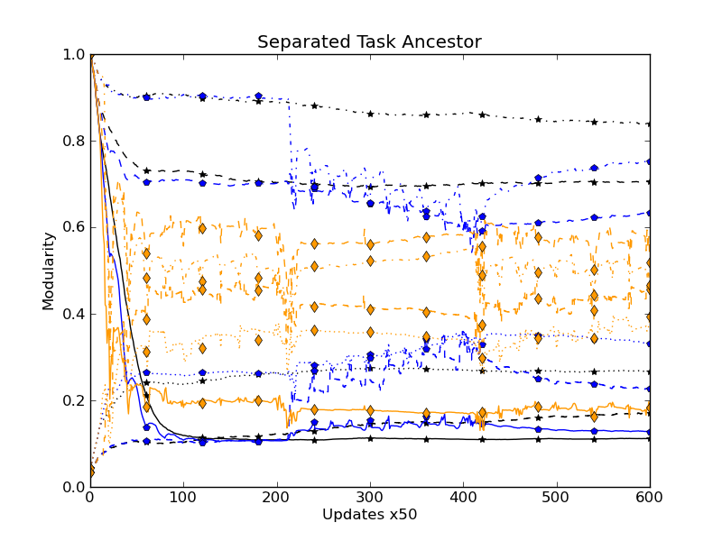
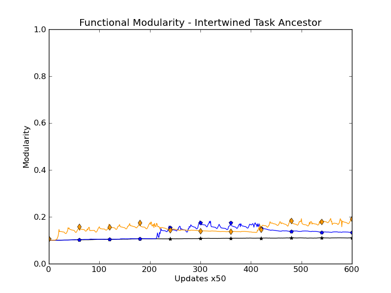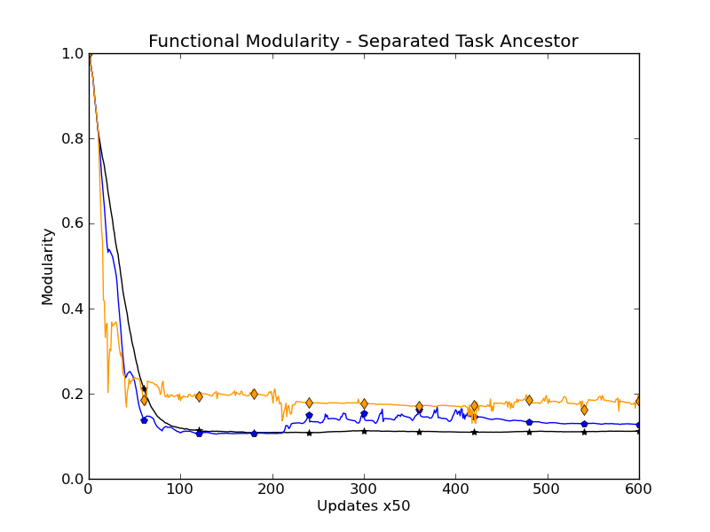
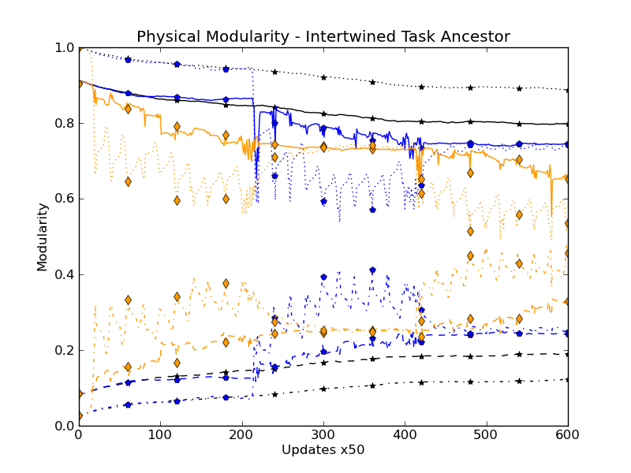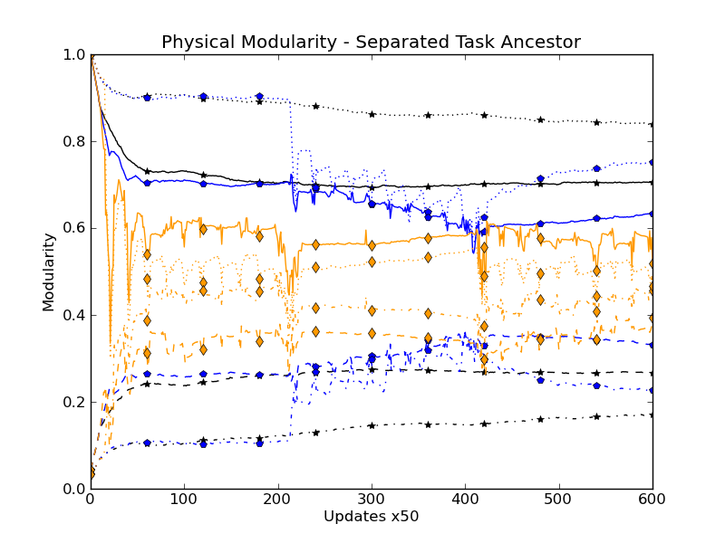
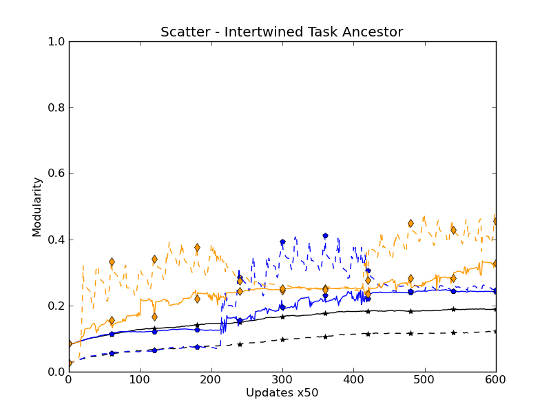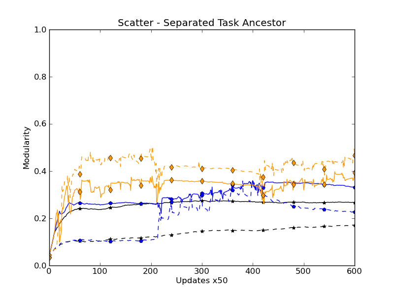
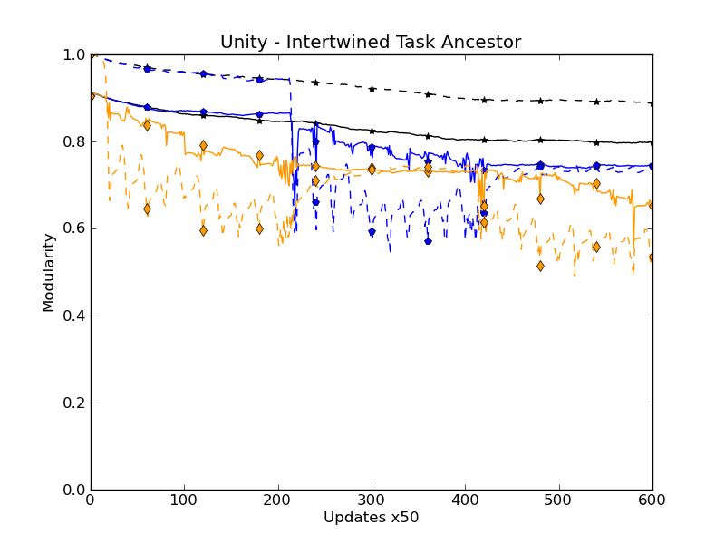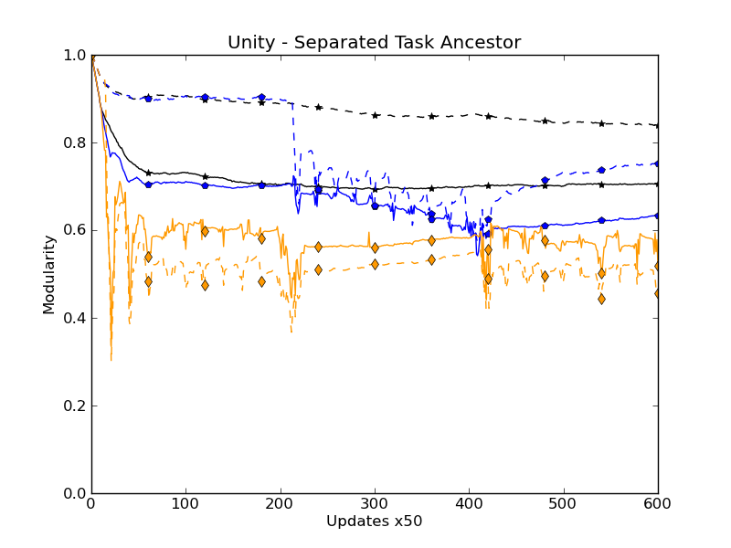
LOG:
- Lab mtg notes
- Showed flame graphs asked for suggestions
- Flame graph, but each point is colored by what task they do, and intensity by abundance.
- Do bars of clades, every genome when born in the clade gets a color for what task they do.
- Or draw phylogeny for all members of a clade, each phylogeny line is colored by the task it does. Each phylogeny line/bar gets thicker by abundance
Wednesday 2/29/12
11:17 AM
TODO:
- Evolve efficient equals ancestor - DONE
- Evolve efficient or ancestor - DONE
- Do short runs with reduced mutation rate – DONE
- 066_Mutation_Rate_Sweep__Evolved_Separated_Ancestor
- Do short runs with evolved or and equ ancestor separated – DONE
1:58 PM
TODO:
- Determine whether differences are significant
LOG:
- Submitted Alife title and abstract. :/
- Moving around and pulling down job 064 (really long)
Thursday 3/1/12
11:26 AM
STATUS:
- Moving around, zipping, and pulling down job 066_Mutation_Rate_Sweep__Evolved_Separated_Ancestor. Looks like some of the jobs were walltime killed. Hopefully not too many.
- Submitted jobs that were killed. 30 Total :/
Friday 3/2/12
3:52 PM
STATUS:
- Downloading the 30 extra runs and set them analyzing.
- Set the rest of the non-killed runs analyzing. Hopefully not too long.